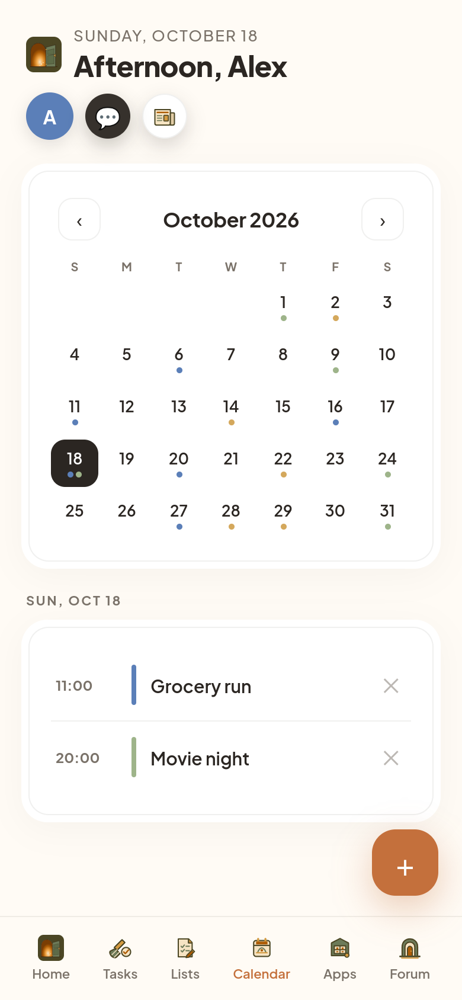
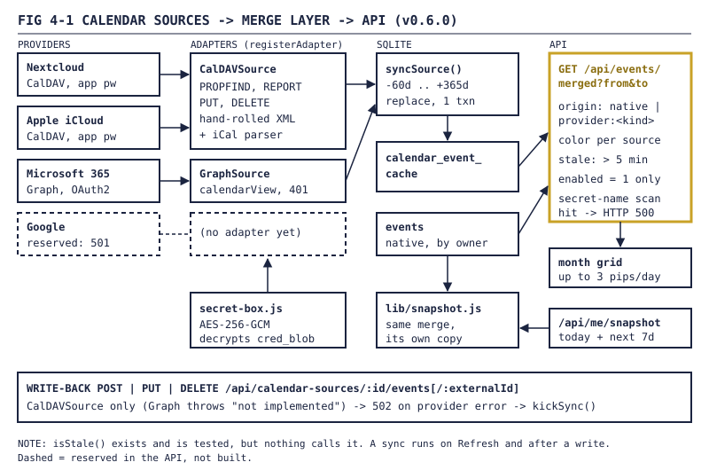
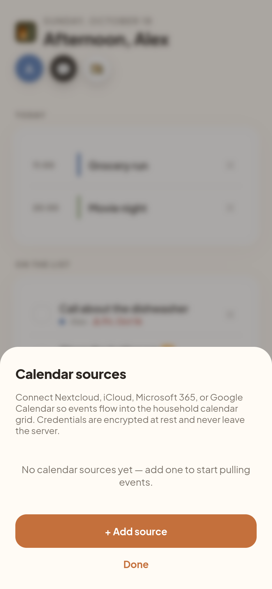
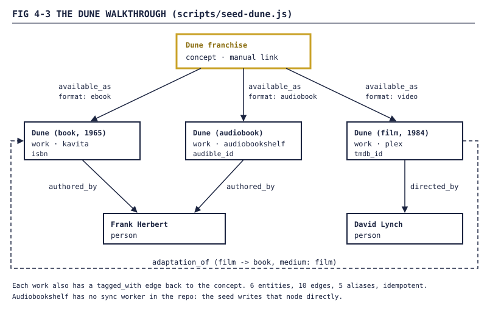

Homestead devlog, Part 4: Calendars and libraries: other people's data
How Homestead stopped asking the household to type things twice: CalDAV and Microsoft 365 calendars merged into one month grid, credentials locked up with AES-256-GCM, and Plex and Kavita synced into an entity graph where Dune is one node.

FIG 4-0 — The calendar month grid with per-person pips. Demo instance, demo data, users alex and sam.Part 3 was about rooms: things Homestead owns. This part is about things it doesn't. Calendars already live somewhere else. So do movies and books. A shared-life app that makes you re-type an appointment is just a second calendar.
Both halves landed the same weekend, August 9 and 10, built by agents on parallel branches. That mattered once (section 5.3).
1. No double entry
The changelog states the goal plainly: Homestead "now reads events from configured external calendars instead of forcing double-entry."
The design is one interface and several adapters. The contract sits at the top of lib/calendar-sources.js:
// const adapter = createAdapter(sourceConfig, deps);
// await adapter.listCalendars() -> [{ href, displayName, color? }]
// await adapter.listEvents({ start, end, calendarHref }) -> [event]
// // Phase 2:
// await adapter.createEvent({ calendarHref, vevent })
// await adapter.updateEvent({ calendarHref, externalId, vevent })
// await adapter.deleteEvent({ calendarHref, externalId })
//
// All adapters must:
// * Treat credentials as opaque secrets — never log them, never
// include them in error messages, never return them.
...
1.1 Spec table: providers as of v0.6.0
| Provider | Adapter | Auth | Read | Write-back |
|---|---|---|---|---|
| Nextcloud | CalDAVSource |
HTTP Basic, app password | yes | create, update, delete |
| Apple iCloud | CalDAVSource |
HTTP Basic, app-specific password | yes | create, update, delete |
| Microsoft 365 | GraphSource |
OAuth2 access + refresh token | yes | no |
| none | none | reserved, POST returns 501 | no |

FIG 4-1 — Providers to adapters to the cache to/api/events/merged. Google is dashed because it is a name in an allow-list and nothing else.
1.2 One CalDAV adapter, two providers
Nextcloud and iCloud both speak CalDAV, so they share one implementation. The only real difference is discovery: Nextcloud's calendar home is predictable from the username, iCloud needs a PROPFIND against the user principal first. That's one flag, discoverPrincipal.
There is no XML library in the dependency list. The agent hand-rolled a namespace-stripping XML walker and a minimal iCalendar parser, and left the reason in the source:
"pulling in a real XML parser dependency for ~10 fields is overkill."
Fair. Recurring events are deliberately out of scope: single VEVENTs only, still true today.
1.3 Microsoft 365 through Graph
The second adapter needed "No merge-layer, API-surface, or DTO changes". That's the point of an interface. GraphSource reads /me/calendarView for a time window, so Microsoft does the date filtering. Credentials are a token pair from your own Azure app registration (Calendars.Read offline_access). The adapter refreshes a minute before expiry, and once more if Graph answers 401 anyway.
NOTE There's an
onTokenRefreshhook so the caller can re-encrypt and save a refreshed token. As of v0.6.0 nothing passes it. A refreshed access token is used for one sync and then forgotten. It works; it just refreshes more than it needs to.
2. The merge layer
Every source syncs into one table, calendar_event_cache. syncSource() asks the adapter for 60 days back to 365 days forward, deletes that source's cached rows and inserts the new set, all in one SQLite transaction.
Reading is one endpoint, GET /api/events/merged?from=YYYY-MM-DD&to=YYYY-MM-DD. Native Homestead events and cached provider events come back in one list:
| Field | Meaning |
|---|---|
origin |
native or provider:<provider> |
color |
per source; native events use the owner's colour |
stale |
true when the source hasn't synced in 5 minutes |
last_error |
the last provider error, if any |
The month-grid release changed the overlap rule so an event that starts before the window but ends inside it still counts:
WHERE cs.enabled = 1
AND cec.start_at <= ?
AND (cec.end_at IS NULL OR cec.end_at >= ?)
A conference that starts on the 30th still shows up on the 1st. enabled = 1 is the pause switch: turn a source off and its events leave the grid without deleting anything. On the grid, provider pips get a 1px ring "so they don't blur into the per-user coloured native pips on the same cell".
2.1 The resync that wasn't
The README says sources are "re-synced in the background when the cache is more than 5 minutes old." The comment block in lib/calendar-sources.js says the merge endpoint re-syncs "when the cache is older than FRESHNESS_MS."
WARNING The code doesn't do that.
isStale()exists and has tests. Nothing outside the tests calls it. In v0.6.0 a source syncs when someone presses Refresh, and after a write-back. The merge endpoint only computes thestaleflag, so the grid can at least admit the data is old. In the old history, as far back as the tagged releases go, it was never wired.
2.2 A leak check in the response path
The merged endpoint checks its own output before answering:
const serialized = JSON.stringify({ events: [...native, ...cached] });
if (/(cred_blob|app_password|access_token|refresh_token|client_secret)/i.test(serialized)) {
return res.status(500).json({ error: 'credential leak detected in merged feed — refusing to respond' });
}
The source-list endpoints instead send every row through publicView(), "the single source of truth for 'what is safe to ship to the client'".
3. Write-back
The same weekend, CalDAV sources got create, update and delete. It's a thin layer over HTTP:
| Operation | Request | Guard |
|---|---|---|
| create | PUT /<cal-href>/<uid>.ics |
If-None-Match: *, never overwrite |
| update | PUT /<cal-href>/<uid>.ics |
If-Match: <etag>, 412 on a lost update |
| delete | DELETE /<cal-href>/<uid>.ics |
If-Match optional |
The etag guard is the interesting one:
// If-Match: <etag> protects against lost-update: a concurrent edit
// elsewhere will have produced a new etag, and the PUT will fail
// with 412 so the caller can re-fetch and retry.
if (etag) headers['If-Match'] = etag;
If the event changed on a phone after a client last read it, that client gets a 412 instead of silently overwriting the change. A provider failure comes back as a 502. A success kicks off a background sync.
NOTE Write-back is API-only in v0.6.0. The app's own event form still creates native Homestead events, and the merged feed doesn't include the external id or etag a client would need to edit a provider event. The plumbing is tested against a fake CalDAV server. The button isn't there.
Graph never got write-back at all:
createEvent: async () => { throw new Error('GraphSource.createEvent: Phase 2, not implemented'); },
4. Credentials at rest
A calendar source holds a real password or a real OAuth token. They live in calendar_sources.cred_blob, encrypted by lib/secret-box.js: AES-256-GCM, a fresh 12-byte IV per value, stored as <iv>:<tag>:<ciphertext>. The key is CALENDAR_CRED_KEY, from openssl rand -hex 32. A missing or wrong-length key throws on every call, and the header comment explains why there's no fallback:
"we'd rather refuse to start than silently ship unencrypted credentials."
What changed was how loud that is. In v0.1.9 a missing key made /api/health report ok: false, so every fresh install looked broken before anyone had connected a calendar. v0.4.3 relaxed it: health stays green, calendarCredKeyReady is reported on its own, and adding a source returns 503 until the key is set.
WARNING Rotating
CALENDAR_CRED_KEYmeans re-encrypting every row. The source calls it "a known operational footgun". There's no rotation helper yet.
4.1 A form, so it isn't curl-only
The first release was API-only. The next day the avatar menu got a Calendar sources sheet: add, edit, delete, refresh. It's driven by GET /api/calendar-sources/kinds, which describes each provider's credential fields and never any values. Editing can change the name, colour and enabled flag, not the credentials; delete and re-add for that. Admins can tick Shared to show a source to the whole household.

FIG 4-2 — The calendar sources settings sheet before any source is added. Demo instance, demo data, users alex and sam.On August 12 the merged events got a second reader: GET /api/me/snapshot, one "here's your day" payload built from the same merge, so an agent sees the Nextcloud event and the Homestead chore in one list. Agents are Part 5. This is the first thing they read.
5. Libraries: the entity graph
The library work started from a complaint. The issue I filed explains why Homarr, Dashy and Homepage never stuck for me: no way to see relationships or move between things.
"Tiles are doors to unrelated rooms; bookmarks beat them."
The fix was an entity layer. One node per real-world thing, typed edges between them, hydrated from the services we already run instead of typed in by hand. The canonical example: Dune is one node, and you can read it in Kavita, listen to it as an audiobook, or watch it in Plex. Each of those is an edge with a deep link.
5.1 Spec table: the schema
All of it is in lib/sync/_schema.js, idempotent, run on every boot:
| Table | Holds |
|---|---|
entities |
kind (person, work, concept, ...), name, slug, meta_json, source_service + source_id |
entity_aliases |
alternate names, for search |
entity_edges |
typed, directed, provenance-tagged, with a deep_link and a stale flag |
entity_review_queue |
possible duplicates waiting for a human |
entities_fts |
FTS5 index behind the ⌘K / Ctrl+K search palette |
Edges are unique on (from_id, to_id, type, source_service, source_id), so a sync can run twice and change nothing.
The agent wrote a design doc first and came back with questions. Some of my answers, verbatim. Add directed_by and authored_by edges? "yes." Plex collections as concept nodes? "i like the idea." (They shipped as tagged_with concept edges, along with genres and moods.) Merge people on lowercased full name, accepting that two people with the same name collide?
"i dont know. whats the rigth answer?"
The agent defaulted to yes, wrote the collision risk into a code comment, and moved on.
5.2 The Dune walkthrough
Before any worker hit a real library, the agent turned the design doc's example into scripts/seed-dune.js, which writes straight to the database (there was no write API yet, by design). Trimmed:
// Step 1 — Kavita worker first run.
upsertEntity({
id: 'ent_dune_book', kind: 'work', name: 'Dune', slug: 'dune-book',
meta: { isbn: '978-0-441-01359-3', year: 1965, ... },
source_service: 'kavita', source_id: 'series-1247', created_by: 'sync:kavita',
});
...
upsertEdge({ id: 'edge_dune_film_directed_by', from_id: 'ent_dune_film_1984', to_id: 'ent_david_lynch',
type: 'directed_by', source_service: 'plex', source_id: '8435', meta: {}, created_by: 'sync:plex' });

FIG 4-3 — The Dune walkthrough as seeded. The concept's page can render "Available as (3)" with a deep link per format.The graph tests (38 assertions) run the whole walkthrough end to end. One footnote: the audiobook is attributed to Audiobookshelf, and there's no Audiobookshelf sync worker in the repo. The seed writes that node by hand.
5.3 Plex and Kavita workers
The real workers came the same weekend:
| Plex | Kavita | |
|---|---|---|
| Module | lib/sync/plex.js |
lib/sync/kavita.js |
| Auth | X-Plex-Token |
x-api-key header |
| Walks | movies, shows, seasons, episodes | Manga and Book libraries only |
| Edges | directed_by, part_of, tagged_with, available_as |
authored_by, tagged_with, available_as |
| Tests | 65 | 75 |
Both run every six hours, can be kicked by an admin, and skip silently when their token isn't set. Both link works across libraries when (title_lower, year) match. When something disappears upstream, they mark edges stale, not entities: "the entity persists because the historical relationship still exists".
The parallel branches did collide once. When the Plex branch was merged onto the graph branch, its server boot crashed: calendar-sources and secret-box routes from the other in-flight branch had leaked into server.js, referencing modules that didn't exist there. The fix was to strip them out. Two branches, one weekend, one server.js.
5.4 Duplicates and the review queue
On August 11 came dedup, in lib/dedup/matcher.js, in three tiers:
- Known IDs (ISBN, TMDB, Audible, Plex GUID, Kavita id). A match adds an
adaptation_ofedge. It never merges. - TMDB cross-reference: same TMDB id, collection and year.
- Fuzzy:
0.6 × title + 0.3 × author + 0.1 × year. At 0.9 or above it adds an alias, between 0.7 and 0.9 it queues a review, below that it does nothing.
mergeEntities() is the only code path that merges two nodes, and it runs when a person clicks Merge into this on the entity page. Don't merge is permanent for that pair.
6. Media comprehension
The other kind of media is what people post to the Porch. v0.4.5 (August 29) added GET /api/media/:id/context, which describes a photo or video for an agent. The changelog's reason: reading only the caption "misses the substance of a friend's post — a meme's joke, a video's scene-cut, the line someone actually said."
Images return the file, thumbnail and caption. Videos return up to 12 keyframes from ffmpeg's scene detection (select=gt(scene,0.4), first and last frame always included, 480px wide), plus an audio transcript. With no transcription key, the transcript is null and the status says 'no_key', so the caller knows why. Results are cached for 24 hours per (media_id, source_mtime). ffmpeg had to be added to the Dockerfile, or every video request 500s.
7. The media queue
"Queue Part Two for tonight" needs somewhere to live, so there's a media_queue table, written by Hearth's enqueue_media action (Part 5 has the agent side). Titles are resolved through the entity graph. The row is unique per user and item, so asking twice gets you one row and one announcement. The announcement is a wall post, linked loosely on purpose:
"The queue row is the durable record of 'I asked for this'; the wall post is an announcement with a retention window"
If the post fails, the queue row is deleted again, so nothing claims to have happened that only half happened.
8. End of Part 4
Where things stood:
- One
CalendarSourceinterface with two working adapters: CalDAV for Nextcloud and iCloud, Graph for Microsoft 365. Google exists by name only. - A merged events API with
origin, colour andstaleon every event, a pause switch per source, and a leak check on the way out. - CalDAV write-back with etag guards, reachable from the API but not the UI.
- Credentials under AES-256-GCM with a key that fails closed.
- A documented background resync that doesn't run.
- An entity graph fed by Plex and Kavita, Dune as the worked example, and a dedup matcher that asks a human before merging.
- Media comprehension for Porch posts, and a media queue.
Next, Part 5: agents move in. Personal access tokens, the third-party app contract, and Hearth, the house agent, which reads all of the above and was deliberately not given the lights.